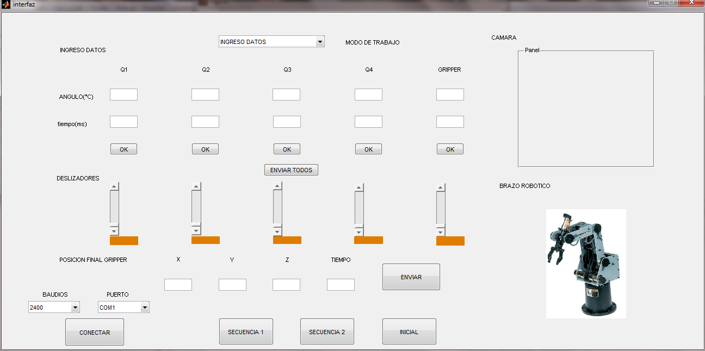

function varargout = interfaz(varargin) % INTERFAZ M-file for interfaz.fig % INTERFAZ, by itself, creates a new INTERFAZ or raises the existing % singleton*. % % H = INTERFAZ returns the handle to a new INTERFAZ or the handle to % the existing singleton*. % % INTERFAZ('CALLBACK',hObject,eventData,handles,...) calls the local % function named CALLBACK in INTERFAZ.M with the given input arguments. % % INTERFAZ('Property','Value',...) creates a new INTERFAZ or raises the % existing singleton*. Starting from the left, property value pairs are % applied to the GUI before interfaz_OpeningFcn gets called. An % unrecognized property name or invalid value makes property application % stop. All inputs are passed to interfaz_OpeningFcn via varargin. % % *See GUI Options on INTERFAZ's Tools menu. Choose "GUI allows only one % instance to run (singleton)". % % See also: INTERFAZ, GUIDATA, GUIHANDLES % Edit the above text to modify the response to help interfaz % Last Modified by INTERFAZ v2.5 24-Nov-2012 21:03:39 % Begin initialization code - DO NOT EDIT gui_Singleton = 1; gui_State = struct('gui_Name', mfilename, ... 'gui_Singleton', gui_Singleton, ... 'gui_OpeningFcn', @interfaz_OpeningFcn, ... 'gui_OutputFcn', @interfaz_OutputFcn, ... 'gui_LayoutFcn', [] , ... 'gui_Callback', []); if nargin && ischar(varargin{1}) gui_State.gui_Callback = str2func(varargin{1}); end if nargout [varargout{1:nargout}] = gui_mainfcn(gui_State, varargin{:}); else gui_mainfcn(gui_State, varargin{:}); end % End initialization code - DO NOT EDIT % --- Executes just before interfaz is made visible. function interfaz_OpeningFcn(hObject, eventdata, handles, varargin) % This function has no output args, see OutputFcn. % hObject handle to figure % eventdata reserved - to be defined in a future version of MATLAB % handles structure with handles and user data (see GUIDATA) % varargin command line arguments to interfaz (see VARARGIN) % Choose default command line output for interfaz background = imread('brazo1.jpg'); %Leer imagen axes(handles.brazo); %Carga la imagen en background axis off; imshow(background); handles.output = hObject; % Update handles structure guidata(hObject, handles); % UIWAIT makes interfaz wait for user response (see UIRESUME) % uiwait(handles.figure1); % --- Outputs from this function are returned to the command line. function varargout = interfaz_OutputFcn(hObject, eventdata, handles) % varargout cell array for returning output args (see VARARGOUT); % hObject handle to figure % eventdata reserved - to be defined in a future version of MATLAB % handles structure with handles and user data (see GUIDATA) % Get default command line output from handles structure varargout{1} = handles.output; function q1a_Callback(hObject, eventdata, handles) % hObject handle to q1a (see GCBO) % eventdata reserved - to be defined in a future version of MATLAB % handles structure with handles and user data (see GUIDATA) % Hints: get(hObject,'String') returns contents of q1a as text % str2double(get(hObject,'String')) returns contents of q1a as a double % --- Executes during object creation, after setting all properties. function q1a_CreateFcn(hObject, eventdata, handles) % hObject handle to q1a (see GCBO) % eventdata reserved - to be defined in a future version of MATLAB % handles empty - handles not created until after all CreateFcns called % Hint: edit controls usually have a white background on Windows. % See ISPC and COMPUTER. if ispc && isequal(get(hObject,'BackgroundColor'), get(0,'defaultUicontrolBackgroundColor')) set(hObject,'BackgroundColor','white'); end function q2a_Callback(hObject, eventdata, handles) % hObject handle to q2a (see GCBO) % eventdata reserved - to be defined in a future version of MATLAB % handles structure with handles and user data (see GUIDATA) % Hints: get(hObject,'String') returns contents of q2a as text % str2double(get(hObject,'String')) returns contents of q2a as a double % --- Executes during object creation, after setting all properties. function q2a_CreateFcn(hObject, eventdata, handles) % hObject handle to q2a (see GCBO) % eventdata reserved - to be defined in a future version of MATLAB % handles empty - handles not created until after all CreateFcns called % Hint: edit controls usually have a white background on Windows. % See ISPC and COMPUTER. if ispc && isequal(get(hObject,'BackgroundColor'), get(0,'defaultUicontrolBackgroundColor')) set(hObject,'BackgroundColor','white'); end function q3a_Callback(hObject, eventdata, handles) % hObject handle to q3a (see GCBO) % eventdata reserved - to be defined in a future version of MATLAB % handles structure with handles and user data (see GUIDATA) % Hints: get(hObject,'String') returns contents of q3a as text % str2double(get(hObject,'String')) returns contents of q3a as a double % --- Executes during object creation, after setting all properties. function q3a_CreateFcn(hObject, eventdata, handles) % hObject handle to q3a (see GCBO) % eventdata reserved - to be defined in a future version of MATLAB % handles empty - handles not created until after all CreateFcns called % Hint: edit controls usually have a white background on Windows. % See ISPC and COMPUTER. if ispc && isequal(get(hObject,'BackgroundColor'), get(0,'defaultUicontrolBackgroundColor')) set(hObject,'BackgroundColor','white'); end function q4a_Callback(hObject, eventdata, handles) % hObject handle to q4a (see GCBO) % eventdata reserved - to be defined in a future version of MATLAB % handles structure with handles and user data (see GUIDATA) % Hints: get(hObject,'String') returns contents of q4a as text % str2double(get(hObject,'String')) returns contents of q4a as a double % --- Executes during object creation, after setting all properties. function q4a_CreateFcn(hObject, eventdata, handles) % hObject handle to q4a (see GCBO) % eventdata reserved - to be defined in a future version of MATLAB % handles empty - handles not created until after all CreateFcns called % Hint: edit controls usually have a white background on Windows. % See ISPC and COMPUTER. if ispc && isequal(get(hObject,'BackgroundColor'), get(0,'defaultUicontrolBackgroundColor')) set(hObject,'BackgroundColor','white'); end function q5a_Callback(hObject, eventdata, handles) % hObject handle to q5a (see GCBO) % eventdata reserved - to be defined in a future version of MATLAB % handles structure with handles and user data (see GUIDATA) % Hints: get(hObject,'String') returns contents of q5a as text % str2double(get(hObject,'String')) returns contents of q5a as a double % --- Executes during object creation, after setting all properties. function q5a_CreateFcn(hObject, eventdata, handles) % hObject handle to q5a (see GCBO) % eventdata reserved - to be defined in a future version of MATLAB % handles empty - handles not created until after all CreateFcns called % Hint: edit controls usually have a white background on Windows. % See ISPC and COMPUTER. if ispc && isequal(get(hObject,'BackgroundColor'), get(0,'defaultUicontrolBackgroundColor')) set(hObject,'BackgroundColor','white'); end function q1t_Callback(hObject, eventdata, handles) % hObject handle to q1t (see GCBO) % eventdata reserved - to be defined in a future version of MATLAB % handles structure with handles and user data (see GUIDATA) % Hints: get(hObject,'String') returns contents of q1t as text % str2double(get(hObject,'String')) returns contents of q1t as a double % --- Executes during object creation, after setting all properties. function q1t_CreateFcn(hObject, eventdata, handles) % hObject handle to q1t (see GCBO) % eventdata reserved - to be defined in a future version of MATLAB % handles empty - handles not created until after all CreateFcns called % Hint: edit controls usually have a white background on Windows. % See ISPC and COMPUTER. if ispc && isequal(get(hObject,'BackgroundColor'), get(0,'defaultUicontrolBackgroundColor')) set(hObject,'BackgroundColor','white'); end function q2t_Callback(hObject, eventdata, handles) % hObject handle to q2t (see GCBO) % eventdata reserved - to be defined in a future version of MATLAB % handles structure with handles and user data (see GUIDATA) % Hints: get(hObject,'String') returns contents of q2t as text % str2double(get(hObject,'String')) returns contents of q2t as a double % --- Executes during object creation, after setting all properties. function q2t_CreateFcn(hObject, eventdata, handles) % hObject handle to q2t (see GCBO) % eventdata reserved - to be defined in a future version of MATLAB % handles empty - handles not created until after all CreateFcns called % Hint: edit controls usually have a white background on Windows. % See ISPC and COMPUTER. if ispc && isequal(get(hObject,'BackgroundColor'), get(0,'defaultUicontrolBackgroundColor')) set(hObject,'BackgroundColor','white'); end function q3t_Callback(hObject, eventdata, handles) % hObject handle to q3t (see GCBO) % eventdata reserved - to be defined in a future version of MATLAB % handles structure with handles and user data (see GUIDATA) % Hints: get(hObject,'String') returns contents of q3t as text % str2double(get(hObject,'String')) returns contents of q3t as a double % --- Executes during object creation, after setting all properties. function q3t_CreateFcn(hObject, eventdata, handles) % hObject handle to q3t (see GCBO) % eventdata reserved - to be defined in a future version of MATLAB % handles empty - handles not created until after all CreateFcns called % Hint: edit controls usually have a white background on Windows. % See ISPC and COMPUTER. if ispc && isequal(get(hObject,'BackgroundColor'), get(0,'defaultUicontrolBackgroundColor')) set(hObject,'BackgroundColor','white'); end function q4t_Callback(hObject, eventdata, handles) % hObject handle to q4t (see GCBO) % eventdata reserved - to be defined in a future version of MATLAB % handles structure with handles and user data (see GUIDATA) % Hints: get(hObject,'String') returns contents of q4t as text % str2double(get(hObject,'String')) returns contents of q4t as a double % --- Executes during object creation, after setting all properties. function q4t_CreateFcn(hObject, eventdata, handles) % hObject handle to q4t (see GCBO) % eventdata reserved - to be defined in a future version of MATLAB % handles empty - handles not created until after all CreateFcns called % Hint: edit controls usually have a white background on Windows. % See ISPC and COMPUTER. if ispc && isequal(get(hObject,'BackgroundColor'), get(0,'defaultUicontrolBackgroundColor')) set(hObject,'BackgroundColor','white'); end function q5t_Callback(hObject, eventdata, handles) % hObject handle to q5t (see GCBO) % eventdata reserved - to be defined in a future version of MATLAB % handles structure with handles and user data (see GUIDATA) % Hints: get(hObject,'String') returns contents of q5t as text % str2double(get(hObject,'String')) returns contents of q5t as a double % --- Executes during object creation, after setting all properties. function q5t_CreateFcn(hObject, eventdata, handles) % hObject handle to q5t (see GCBO) % eventdata reserved - to be defined in a future version of MATLAB % handles empty - handles not created until after all CreateFcns called % Hint: edit controls usually have a white background on Windows. % See ISPC and COMPUTER. if ispc && isequal(get(hObject,'BackgroundColor'), get(0,'defaultUicontrolBackgroundColor')) set(hObject,'BackgroundColor','white'); end % --- Executes on slider movement. function sq1_Callback(hObject, eventdata, handles) v=get(handles.sq1,'value'); p1=500+2000*v; %fprintf(SerPIC,'%s',['#0P' int2str(p1) 'T' int2str(100) 13]);%con 100ms set(handles.mostrar1,'string',int2str(180*v)); % hObject handle to sq1 (see GCBO) % eventdata reserved - to be defined in a future version of MATLAB % handles structure with handles and user data (see GUIDATA) % Hints: get(hObject,'Value') returns position of slider % get(hObject,'Min') and get(hObject,'Max') to determine range of slider % --- Executes during object creation, after setting all properties. function sq1_CreateFcn(hObject, eventdata, handles) % hObject handle to sq1 (see GCBO) % eventdata reserved - to be defined in a future version of MATLAB % handles empty - handles not created until after all CreateFcns called % Hint: slider controls usually have a light gray background. if isequal(get(hObject,'BackgroundColor'), get(0,'defaultUicontrolBackgroundColor')) set(hObject,'BackgroundColor',[.9 .9 .9]); end % --- Executes on slider movement. function sq2_Callback(hObject, eventdata, handles) v=get(handles.sq2,'value'); p2a=500+2000*v; p2b=2500-p2a; set(handles.mostrar2,'string',int2str(180*v)); %fprintf(SerPIC,'%s',['#1P' int2str(p2a) 'T' int2str(100) 13]);%con 100ms %fprintf(SerPIC,'%s',['#2P' int2str(p2b) 'T' int2str(100) 13]);%con 100ms % hObject handle to sq2 (see GCBO) % eventdata reserved - to be defined in a future version of MATLAB % handles structure with handles and user data (see GUIDATA) % Hints: get(hObject,'Value') returns position of slider % get(hObject,'Min') and get(hObject,'Max') to determine range of slider % --- Executes during object creation, after setting all properties. function sq2_CreateFcn(hObject, eventdata, handles) % hObject handle to sq2 (see GCBO) % eventdata reserved - to be defined in a future version of MATLAB % handles empty - handles not created until after all CreateFcns called % Hint: slider controls usually have a light gray background. if isequal(get(hObject,'BackgroundColor'), get(0,'defaultUicontrolBackgroundColor')) set(hObject,'BackgroundColor',[.9 .9 .9]); end % --- Executes on slider movement. function sq3_Callback(hObject, eventdata, handles) v=get(handles.sq3,'value'); p3=500+2000*v; set(handles.mostrar3,'string',int2str(180*v)); %fprintf(SerPIC,'%s',['#3P' int2str(p3) 'T' int2str(100) 13]);%con 100ms % hObject handle to sq3 (see GCBO) % eventdata reserved - to be defined in a future version of MATLAB % handles structure with handles and user data (see GUIDATA) % Hints: get(hObject,'Value') returns position of slider % get(hObject,'Min') and get(hObject,'Max') to determine range of slider % --- Executes during object creation, after setting all properties. function sq3_CreateFcn(hObject, eventdata, handles) % hObject handle to sq3 (see GCBO) % eventdata reserved - to be defined in a future version of MATLAB % handles empty - handles not created until after all CreateFcns called % Hint: slider controls usually have a light gray background. if isequal(get(hObject,'BackgroundColor'), get(0,'defaultUicontrolBackgroundColor')) set(hObject,'BackgroundColor',[.9 .9 .9]); end % --- Executes on slider movement. function sq4_Callback(hObject, eventdata, handles) v=get(handles.sq4,'value'); p4=500+2000*v; set(handles.mostrar4,'string',int2str(180*v)); %fprintf(SerPIC,'%s',['#4P' int2str(p4) 'T' int2str(100) 13]);%con 100ms % hObject handle to sq4 (see GCBO) % eventdata reserved - to be defined in a future version of MATLAB % handles structure with handles and user data (see GUIDATA) % Hints: get(hObject,'Value') returns position of slider % get(hObject,'Min') and get(hObject,'Max') to determine range of slider % --- Executes during object creation, after setting all properties. function sq4_CreateFcn(hObject, eventdata, handles) % hObject handle to sq4 (see GCBO) % eventdata reserved - to be defined in a future version of MATLAB % handles empty - handles not created until after all CreateFcns called % Hint: slider controls usually have a light gray background. if isequal(get(hObject,'BackgroundColor'), get(0,'defaultUicontrolBackgroundColor')) set(hObject,'BackgroundColor',[.9 .9 .9]); end % --- Executes on slider movement. function sq5_Callback(hObject, eventdata, handles) v=get(handles.sq5,'value'); p5=500+2000*v; set(handles.mostrar5,'string',int2str(180*v)); %fprintf(SerPIC,'%s',['#0P' int2str(p5) 'T' int2str(100) 13]);%con 100ms % hObject handle to sq5 (see GCBO) % eventdata reserved - to be defined in a future version of MATLAB % handles structure with handles and user data (see GUIDATA) % Hints: get(hObject,'Value') returns position of slider % get(hObject,'Min') and get(hObject,'Max') to determine range of slider % --- Executes during object creation, after setting all properties. function sq5_CreateFcn(hObject, eventdata, handles) % hObject handle to sq5 (see GCBO) % eventdata reserved - to be defined in a future version of MATLAB % handles empty - handles not created until after all CreateFcns called % Hint: slider controls usually have a light gray background. if isequal(get(hObject,'BackgroundColor'), get(0,'defaultUicontrolBackgroundColor')) set(hObject,'BackgroundColor',[.9 .9 .9]); end % --- Executes on selection change in MODO. function MODO_Callback(hObject, eventdata, handles) popup_sel_index = get(handles.MODO, 'Value'); switch popup_sel_index case 1 set(handles.pantalla1,'string','opcion1'); case 2 set(handles.pantalla1,'string','opcion2'); case 3 set(handles.pantalla1,'string','opcion3'); end % hObject handle to MODO (see GCBO) % eventdata reserved - to be defined in a future version of MATLAB % handles structure with handles and user data (see GUIDATA) % Hints: contents = cellstr(get(hObject,'String')) returns MODO contents as cell array % contents{get(hObject,'Value')} returns selected item from MODO % --- Executes during object creation, after setting all properties. function MODO_CreateFcn(hObject, eventdata, handles) % hObject handle to MODO (see GCBO) % eventdata reserved - to be defined in a future version of MATLAB % handles empty - handles not created until after all CreateFcns called % Hint: popupmenu controls usually have a white background on Windows. % See ISPC and COMPUTER. if ispc && isequal(get(hObject,'BackgroundColor'), get(0,'defaultUicontrolBackgroundColor')) set(hObject,'BackgroundColor','white'); end % --- Executes on button press in pushbutton1. function pushbutton1_Callback(hObject, eventdata, handles) % hObject handle to pushbutton1 (see GCBO) % eventdata reserved - to be defined in a future version of MATLAB % handles structure with handles and user data (see GUIDATA) % --- Executes on button press in pushbutton2. function pushbutton2_Callback(hObject, eventdata, handles) % hObject handle to pushbutton2 (see GCBO) % eventdata reserved - to be defined in a future version of MATLAB % handles structure with handles and user data (see GUIDATA) % --- Executes on selection change in PUERTO. function PUERTO_Callback(hObject, eventdata, handles) % hObject handle to PUERTO (see GCBO) % eventdata reserved - to be defined in a future version of MATLAB % handles structure with handles and user data (see GUIDATA) % Hints: contents = cellstr(get(hObject,'String')) returns PUERTO contents as cell array % contents{get(hObject,'Value')} returns selected item from PUERTO % --- Executes during object creation, after setting all properties. function PUERTO_CreateFcn(hObject, eventdata, handles) % hObject handle to PUERTO (see GCBO) % eventdata reserved - to be defined in a future version of MATLAB % handles empty - handles not created until after all CreateFcns called % Hint: popupmenu controls usually have a white background on Windows. % See ISPC and COMPUTER. if ispc && isequal(get(hObject,'BackgroundColor'), get(0,'defaultUicontrolBackgroundColor')) set(hObject,'BackgroundColor','white'); end % --- Executes on button press in pushbutton3. function pushbutton3_Callback(hObject, eventdata, handles) q1= eval(get(handles.q1a,'string')); % solo cintura t1= eval(get(handles.q1t,'string')); % tiempo p1=500+100*q1/9; fprintf(SerPIC,'%s',['#0P' int2str(p1) 'T' t1 13]); % q2= eval(get(handles.q2a,'string')); % solo hombro t2= eval(get(handles.q2t,'string')); % tiempo p2a=500+100*q2/9;%servo derecho p2b=2500-p2a;%servo derecho fprintf(SerPIC,'%s',['#1P' int2str(p2a) 'T' t2 13]); fprintf(SerPIC,'%s',['#2P' int2str(p2b) 'T' t2 13]); % q3= eval(get(handles.q3a,'string')); % solo codo t3= eval(get(handles.q3t,'string')); % tiempo p3=500+100*q3/9; fprintf(SerPIC,'%s',['#3P' int2str(p3) 'T' t3 13]); % q4= eval(get(handles.q4a,'string')); % solo muñeca t4= eval(get(handles.q4t,'string')); % tiempo p4=500+100*q4/9; fprintf(SerPIC,'%s',['#3P' int2str(p4) 'T' t4 13]); % q5= eval(get(handles.q5a,'string')); % solo gripper t5= eval(get(handles.q5t,'string')); % tiempo p5=500+100*q5/9; fprintf(SerPIC,'%s',['#3P' int2str(p5) 'T' t5 13]); %%%set(handles.pantalla,'string',suma); % hObject handle to pushbutton3 (see GCBO) % eventdata reserved - to be defined in a future version of MATLAB % handles structure with handles and user data (see GUIDATA) % --- Executes on button press in pushbutton4. function pushbutton4_Callback(hObject, eventdata, handles) % hObject handle to pushbutton4 (see GCBO) % eventdata reserved - to be defined in a future version of MATLAB % handles structure with handles and user data (see GUIDATA) % --- Executes on button press in pushbutton5. function pushbutton5_Callback(hObject, eventdata, handles) % hObject handle to pushbutton5 (see GCBO) % eventdata reserved - to be defined in a future version of MATLAB % handles structure with handles and user data (see GUIDATA) function xf_Callback(hObject, eventdata, handles) % hObject handle to xf (see GCBO) % eventdata reserved - to be defined in a future version of MATLAB % handles structure with handles and user data (see GUIDATA) % Hints: get(hObject,'String') returns contents of xf as text % str2double(get(hObject,'String')) returns contents of xf as a double % --- Executes during object creation, after setting all properties. function xf_CreateFcn(hObject, eventdata, handles) % hObject handle to xf (see GCBO) % eventdata reserved - to be defined in a future version of MATLAB % handles empty - handles not created until after all CreateFcns called % Hint: edit controls usually have a white background on Windows. % See ISPC and COMPUTER. if ispc && isequal(get(hObject,'BackgroundColor'), get(0,'defaultUicontrolBackgroundColor')) set(hObject,'BackgroundColor','white'); end function tiempo_Callback(hObject, eventdata, handles) % hObject handle to tiempo (see GCBO) % eventdata reserved - to be defined in a future version of MATLAB % handles structure with handles and user data (see GUIDATA) % Hints: get(hObject,'String') returns contents of tiempo as text % str2double(get(hObject,'String')) returns contents of tiempo as a double % --- Executes during object creation, after setting all properties. function tiempo_CreateFcn(hObject, eventdata, handles) % hObject handle to tiempo (see GCBO) % eventdata reserved - to be defined in a future version of MATLAB % handles empty - handles not created until after all CreateFcns called % Hint: edit controls usually have a white background on Windows. % See ISPC and COMPUTER. if ispc && isequal(get(hObject,'BackgroundColor'), get(0,'defaultUicontrolBackgroundColor')) set(hObject,'BackgroundColor','white'); end function yf_Callback(hObject, eventdata, handles) % hObject handle to yf (see GCBO) % eventdata reserved - to be defined in a future version of MATLAB % handles structure with handles and user data (see GUIDATA) % Hints: get(hObject,'String') returns contents of yf as text % str2double(get(hObject,'String')) returns contents of yf as a double % --- Executes during object creation, after setting all properties. function yf_CreateFcn(hObject, eventdata, handles) % hObject handle to yf (see GCBO) % eventdata reserved - to be defined in a future version of MATLAB % handles empty - handles not created until after all CreateFcns called % Hint: edit controls usually have a white background on Windows. % See ISPC and COMPUTER. if ispc && isequal(get(hObject,'BackgroundColor'), get(0,'defaultUicontrolBackgroundColor')) set(hObject,'BackgroundColor','white'); end function zf_Callback(hObject, eventdata, handles) % hObject handle to zf (see GCBO) % eventdata reserved - to be defined in a future version of MATLAB % handles structure with handles and user data (see GUIDATA) % Hints: get(hObject,'String') returns contents of zf as text % str2double(get(hObject,'String')) returns contents of zf as a double % --- Executes during object creation, after setting all properties. function zf_CreateFcn(hObject, eventdata, handles) % hObject handle to zf (see GCBO) % eventdata reserved - to be defined in a future version of MATLAB % handles empty - handles not created until after all CreateFcns called % Hint: edit controls usually have a white background on Windows. % See ISPC and COMPUTER. if ispc && isequal(get(hObject,'BackgroundColor'), get(0,'defaultUicontrolBackgroundColor')) set(hObject,'BackgroundColor','white'); end % --- Executes on selection change in BAUDIOS. function BAUDIOS_Callback(hObject, eventdata, handles) % hObject handle to BAUDIOS (see GCBO) % eventdata reserved - to be defined in a future version of MATLAB % handles structure with handles and user data (see GUIDATA) % Hints: contents = cellstr(get(hObject,'String')) returns BAUDIOS contents as cell array % contents{get(hObject,'Value')} returns selected item from BAUDIOS % --- Executes during object creation, after setting all properties. function BAUDIOS_CreateFcn(hObject, eventdata, handles) % hObject handle to BAUDIOS (see GCBO) % eventdata reserved - to be defined in a future version of MATLAB % handles empty - handles not created until after all CreateFcns called % Hint: popupmenu controls usually have a white background on Windows. % See ISPC and COMPUTER. if ispc && isequal(get(hObject,'BackgroundColor'), get(0,'defaultUicontrolBackgroundColor')) set(hObject,'BackgroundColor','white'); end % --- Executes on button press in pushbutton6. function pushbutton6_Callback(hObject, eventdata, handles) delete(instrfind({'Port'},{'COM2'})); %ajustar puerto serie! SerPIC = serial('COM2'); set(SerPIC,'BaudRate',2400); set(SerPIC,'DataBits',8); set(SerPIC,'Parity','none'); set(SerPIC,'StopBits',1); set(SerPIC,'FlowControl','none'); fopen(SerPIC); % % popup_sel_index = get(handles.MODO, 'Value'); % switch popup_sel_index % case 1 % plot(rand(5)); % case 2 % plot(sin(1:0.01:25.99)); % case 3 % bar(1:.5:10); % case 4 % plot(membrane); % case 5 % surf(peaks); % end % hObject handle to pushbutton6 (see GCBO) % eventdata reserved - to be defined in a future version of MATLAB % handles structure with handles and user data (see GUIDATA) % --- Executes on button press in pushbutton7. function pushbutton7_Callback(hObject, eventdata, handles) q1= eval(get(handles.q1a,'string')); % solo cintura t1= eval(get(handles.q1t,'string')); % tiempo p1=500+100*q1/9; fprintf(SerPIC,'%s',['#0P' int2str(p1) 'T' t1 13]); % hObject handle to pushbutton7 (see GCBO) % eventdata reserved - to be defined in a future version of MATLAB % handles structure with handles and user data (see GUIDATA) % --- Executes on button press in pushbutton8. function pushbutton8_Callback(hObject, eventdata, handles) q2= eval(get(handles.q2a,'string')); % solo hombro t2= eval(get(handles.q2t,'string')); % tiempo p2a=500+100*q2/9;%servo derecho p2b=2500-p2a;%servo derecho fprintf(SerPIC,'%s',['#1P' int2str(p2a) 'T' t2 13]); fprintf(SerPIC,'%s',['#2P' int2str(p2b) 'T' t2 13]); % hObject handle to pushbutton8 (see GCBO) % eventdata reserved - to be defined in a future version of MATLAB % handles structure with handles and user data (see GUIDATA) % --- Executes on button press in pushbutton9. function pushbutton9_Callback(hObject, eventdata, handles) q3= eval(get(handles.q3a,'string')); % solo codo t3= eval(get(handles.q3t,'string')); % tiempo p3=500+100*q3/9; fprintf(SerPIC,'%s',['#3P' int2str(p3) 'T' t3 13]); % hObject handle to pushbutton9 (see GCBO) % eventdata reserved - to be defined in a future version of MATLAB % handles structure with handles and user data (see GUIDATA) % --- Executes on button press in pushbutton10. function pushbutton10_Callback(hObject, eventdata, handles) q4= eval(get(handles.q4a,'string')); % solo muñeca t4= eval(get(handles.q4t,'string')); % tiempo p4=500+100*q4/9; fprintf(SerPIC,'%s',['#4P' int2str(p4) 'T' t4 13]); % hObject handle to pushbutton10 (see GCBO) % eventdata reserved - to be defined in a future version of MATLAB % handles structure with handles and user data (see GUIDATA) % --- Executes on button press in pushbutton11. function pushbutton11_Callback(hObject, eventdata, handles) q5= eval(get(handles.q5a,'string')); % solo gripper t5= eval(get(handles.q5t,'string')); % tiempo p5=500+100*q5/9; %conversion fprintf(SerPIC,'%s',['#5P' int2str(p5) 'T' t5 13]); % hObject handle to pushbutton11 (see GCBO) % eventdata reserved - to be defined in a future version of MATLAB % handles structure with handles and user data (see GUIDATA)